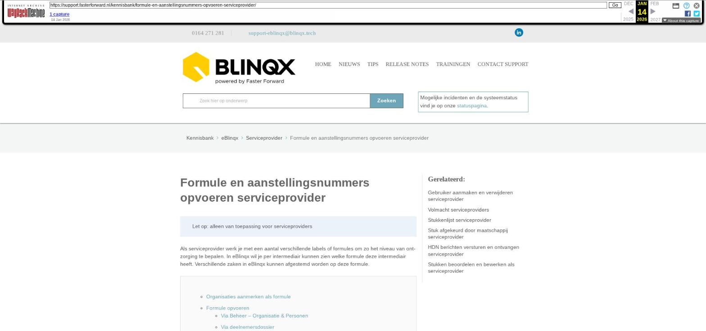

Formule en aanstellingsnummers opvoeren serviceprovider

Tekstinhoud
Formule en aanstellingsnummers opvoeren serviceprovider
Let op: alleen van toepassing voor serviceproviders
Als serviceprovider werk je met een aantal verschillende labels of formules om zo het niveau van ontzorging te bepalen. In eBlinqx wil je per intermediair kunnen zien welke formule deze intermediair heeft. Verschillende zaken in eBlinqx kunnen afgestemd worden op deze formule.
Organisaties aanmerken als formule
Formule opvoeren
Via Beheer – Organisatie & Personen
Via deelnemersdossier
Aanstellingsnummer instellen
Aanstelling opvoeren onder formule
Aanstelling opvoeren onder maatschappij
Verzenden van stukken uit de stukkenlijst
Huisstijl
Organisaties aanmerken als formule
Organisaties kan je aanmerken als formule. Het aanmerken als formule doe je via Organisatie & personen – betreffende organisatie – tabblad Detail – Formule aanvinken.
Formule opvoeren
Via Beheer – Organisatie & Personen
De formule voer je op per intermediair. Dit kan je doen via Beheer – Organisatie & personen – betreffende intermediair. Bij de organisaties die intermediair zijn, staat onder het tabblad Detail 'deelnemer' aangevinkt.
De formule kan je onder het tabblad Algemeen toevoegen. Dit door middel van het groene plusicoon achter Formule. Wanneer je op het groene plusicoon hebt gedrukt, komen de organisaties naar voren die aangemerkt zijn als formule.
Via deelnemersdossier
Ook kan je via het deelnemersdossier, indien je de juiste rechten hebt, een formule toevoegen en verwijderen. Dit via het tabblad Partijen & Objecten – klikken op Organisatie.
Dan zie je vervolgens rechts de formule staan.
Let op: het is niet mogelijk om hier meer dan één formule op te voeren. Is er reeds een formule gekoppeld moet deze verwijderd worden alvorens het mogelijk is een nieuwe formule te koppelen. Het verwijderen kan, indien je hier de juiste rechten voor hebt, door middel van het rode kruisje achter de formule.
Aanstellingsnummer instellen
De aanstellingen kunnen per kantoor/deelnemer of per formule worden geregeld. Het opvoeren van het aanstellingsnummer kan onder de formule zelf of onder de geldverstrekker/maatschappij. Bij het versturen van een HDN-bericht zal eBlinqx eerst kijken of er één aanstellingsnummer op kantoor staat ingeregeld. Is dit niet het geval dan wordt de aanstelling onder de formule meegestuurd. Wanneer er meerdere aanstellingsnummers per kantoor of formule staan ingeregeld dan verschijnt er een foutmelding.
Aanstelling opvoeren onder formule
Hiervoor ga je naar Beheer – Organisaties & Personen. Je zoekt de betreffende formule op. Hiervoor kan je het veld 'Categorie' in het filter op 'Formule' zetten of je zoekt op naam.
Onder de juiste formule ga je naar het tabblad Aanstellingen. Hier klik je op het groene plusicoon om een aanstellingsnummer toe te voegen. In de pop-up zoek je door middel van het blauwe pijltje de juiste intermediair op. Bij type selecteer je het juiste product en status zet je op 'Geaccepteerd'. Je vult het aanstellingsnummer zowel in het veld 'Huidig aanstellingsnummer' en 'Nieuw aanstellingsnummer' in.
Aanstelling opvoeren onder maatschappij
Hiervoor ga je naar Beheer – Organisaties & Personen. Je zoekt de betreffende maatschappij op door te zoeken op naam.
Onder de juiste maatschappij ga je naar het tabblad Aanstellingen. Hier klik je op het groene plusicoon om een aanstellingsnummer toe te voegen. In de pop-up zoek je door middel van het blauwe pijltje de juiste formule of het juiste kantoor op. Bij type selecteer je het juiste product en status zet je op 'Geaccepteerd'. Je vult het aanstellingsnummer zowel in het veld 'Huidig aanstellingsnummer' en 'Nieuw aanstellingsnummer' in.
Verzenden van stukken uit de stukkenlijst
Om stukken te kunnen versturen moet er een formule opgevoerd staan onder het kantoor. Staat er geen formule opgevoerd dan verschijnt hiervan een melding en is het niet mogelijk om de stukken te versturen.
Huisstijl
Vanuit het dossier is het mogelijk om een samenvatting in huisstijl te printen. Deze huisstijl stel je in onder de formule. Dit via Beheer – Organisatie & Personen – betreffende formule – tabblad Huisstijl. Zo hoef je deze niet voor iedere intermediair in te stellen. Indien hier geen huisstijl staat ingesteld dan wordt de samenvatting zonder huisstijl gegenereerd.
Laatste update: 21 oktober 2025
Was deze informatie nuttig?
Ja Nee